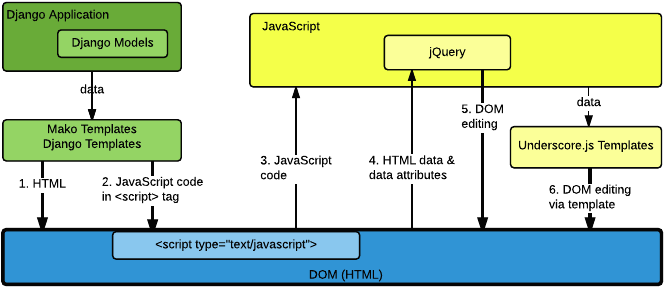

Preventing Cross Site Scripting Vulnerabilities#
Cross Site Scripting (XSS) vulnerabilities allow user-supplied data to be incorrectly executed as code in a web browser. It can be difficult to write code that is safe from XSS security vulnerabilities. This section presents best practices for handling proper escaping in the Open edX platform to avoid these vulnerabilities.
Note
If you become aware of security issues, do not report them in public. Instead, please email security@openedx.org.
Philosophy and General Rules#
The philosophy behind the recommendations in this section is to make things as simple as possible for developers. Protecting against XSS vulnerabilities typically requires properly escaping user-provided data before it is placed on the page. Rather than trying to determine if data is user-provided and could be compromised, we will play it safe and escape data whether it is user- provided or not. Unfortunately, because there are many different rules for escaping, you still must choose the proper type of escaping.
Here are some general rules.
Escape always. Assume that all data is untrusted and escape it appropriately. Do not try to determine whether data could or could not be manipulated by a user.
Escape late. Delay escaping as long as possible, until you can see the actual context and understand the proper escaping that is required for the context. Browsers interpret different contexts such as HTML, URLs, CSS, and Javascript/JSON with different rules, so there are different escaping requirements based on where the data is being used in a page.
Escape appropriately. Know what kind of data you have (for example, HTML, plain text, or JSON) and where it is going (for example, HTML or JavaScript). Choose the proper escaping function based on these details.
Validation is not sufficient. Validating inputs does not replace the need to properly escape. In some cases, this may reduce the likelihood of potential problems, but proper escaping is always necessary.
Do not store escaped data. Again, because you do not know ahead of time all the places that the data will be used, you must wait until you have the proper context to decide on the proper escaping.
Types of Context and Escaping#
Overview of Contexts#
The following diagram provides a high-level overview of the relationship between the different templates, different contexts of DOM creation and manipulation, and different types of escaping. As a general rule, proper escaping is related to the context in which the data is being written, and might not match the context that will eventually be reading the data.
{kind=link}
In the Open edX platform, data flows from the application to the initial HTML page mainly through the use of Mako templates.
Descriptions of each numbered arrow in the diagram follow.
This step represents the use of Mako templates to write general HTML tags (that is, tags other than
<script>tags) to create the HTML page. Any data written to the page inside one of these HTML tags or HTML attributes must be HTML-escaped to be treated as plain text.This step represents the use of Mako templates to write JavaScript inside a
<script>tag in the HTML page. Data written to this context must all be JavaScript-escaped to keep it from mistakenly being treated as HTML. Note that this data should not be HTML-escaped, which must happen in a later step if it is written back to the DOM by JavaScript.This step represents the loading and executing of JavaScript from the HTML page by the JavaScript engine. This step should be safe, if data was properly JavaScript-escaped earlier.
In this step, JavaScript might load additional data from HTML tags and attributes using the DOM. Sometimes data is passed in this way via data attributes. This data is typically read using jQuery functions, but it can be read using other JavaScript functions. The data can be in the form of plain text strings or JSON. If it is in the form of strings, this data should mostly be plain text. Be careful with the escaping in this case. Although the data is used in JavaScript, it is transmitted as HTML, and so must be HTML-escaped.
In this step, JavaScript is being used to edit the DOM, often by creating HTML tags or setting HTML attributes. Often this is done using jQuery functions. Since HTML tags and attributes are being written here, any plain text must be properly HTML-escaped.
This step represents a subset of DOM manipulation using JavaScript, specifically through use of Underscore.js templates. Although these templates have a specific syntax for escaping, because HTML tags and attributes are being written any plain text must be properly HTML-escaped.
HTML Context and Escaping#
The outermost context of an HTML file is HTML. In an HTML context inside an HTML file, data is kept safe by HTML-escaping.
How HTML-Escaping Makes HTML Safe#
Let’s review a simple example of an XSS attack and how proper escaping might prevent such an attack. Imagine that we find the following expression in a Mako template.
<div>${course_name}</div>
Imagine further that someone uses Studio to set the course name as shown in
this example, including the HTML <script> tag.
<script>alert('XSS attack!');</script>
The following resulting unsafe page source is sent to the browser.
<div><script>alert('XSS attack!');</script></div>
The browser would execute the JavaScript code in the <script>alert('XSS
attack!');</script> tag. The user has injected code into the page that would
display a pop-up alert, which we would not want to allow. Because this attack
could contain arbitrary JavaScript that would be executed by the browser with
the same trust as any JavaScript that is sent from the application, it has the
potential to do something much more malicious than simply displaying a pop-up.
An example might be to steal and email the user’s cookies.
In Mako, you can introduce HTML-escaping for all expressions on a page using
the page directive with the h filter. Here is an example of an expression
that is properly HTML-escaped.
<%page expression_filter="h"/>
...
<div>${course_name}</div>
The resulting safe page source is as follows.
<div><script>alert('XSS!');</script></div>
This time, the browser will not interpret the <script> tag as a JavaScript
context, and instead simply displays the original string in the page.
JavaScript Context and Escaping#
The outermost context of a JavaScript file is JavaScript. An HTML file also contains a JavaScript context inside a <script> tag. Inside a JavaScript context, data is kept safe by JavaScript-escaping.
How JavaScript-Escaping Makes HTML Safe#
Here is an example of an expression used in a valid JavaScript context. It is
created using a <script> tag inside a Mako template.
<script type="text/javascript">
var courseName = "${course_name}";
...
</script>
For this example, imagine that someone uses Studio to set the course name as shown here.
";alert('XSS attack!');"
The resulting unsafe page source, sent to the browser with no escaping, would look like this.
<script type="text/javascript">
var courseName = "";alert('XSS attack!');"";
...
</script>
You can see how the attacker closed out the string and again tricked the browser into executing the malicious JavaScript in the context of JavaScript. There are several reasons why you do not want to use the default HTML-escaping here.
JavaScript-escaping will also escape all characters that are special characters in HTML, such as
<. However, JavaScript-escaping will escape<to\u003C, rather than to<. This will still keep the browser from finding an HTML tag where it does not belong.The resulting string might not ultimately be used in an HTML context, so HTML entities might not be the proper escaping.
The way to properly JavaScript-escape code in Mako is shown in the following example.
<%! from openedx.core.djangolib.js_utils import js_escaped_string %>
...
<script type="text/javascript">
var courseName = "${course_name | n, js_escaped_string}";
...
</script>
The code above would produce the following safe page source.
<script type="text/javascript">
var courseName = "\u0022\u003Balert(\u0027XSS attack!\u0027)\u003B\u0022\u0022\u003B";
...
</script>
CSS Context and Escaping#
The browser treats any code inside a <style> tag or style attribute in
an HTML page as a CSS context, or something that requires CSS parsing. CSS
parsing has its own rules, and requires CSS-escaping.
In a CSS context, the following additional constraints are required to keep user supplied data safe.
User supplied data can only appear as the value of a style property. In other words, never allow a user to supply the entire contents of the style tag or style property, or anything outside of the limited scope of an individual property value.
User supplied URLs must use one of these safe protocols: “http:”, “https:”, or “”. Doing so prevents users from being able to supply a URL that uses the “javascript” protocol as an example.
User supplied style property values must not contain
expression(...)due to an IE feature that would enable arbitrary JavaScript to run.
There are no existing helper functions for these additional constraints in the platform. If you need to use user supplied data in a CSS context, you must work with edX to help expand the suite of available helpers.
For more information, see OWASP: CSS and XSS.
URL Context and Escaping#
URLs require multiple types of escaping. This typically involves URL-escaping in addition to either HTML-escaping or JavaScript-escaping.
There are many special characters that are meaningful in a URL. For example,
both & and = are used to designate parts of the query string. If data
is being provided as a query parameter, and it might contain special
characters, it must be fully URL-escaped. This is especially true with user
provided data, which can contain any character. Using the JavaScript URL-
escaping functions as an example, you would use the encodeURIComponent
function on the data which will URL-escape all special characters. Here is an
example.
var url = "http://test.com/?data=" + encodeURIComponent(userData)
URL-escaping is susceptible to double-escaping, meaning you must URL-escape its parts exactly once. It is best to perform the URL-escaping at the time the URL is being assembled.
Additionally, you will typically HTML-escape or JavaScript-escape a URL
following the same rules for any other data added to the page, since a
properly URL-escaped URL might still contain characters that are meaningful in
an HTML context, such as & and '.
For example, when a URL is added to the href attribute of an anchor tag
(<a>), it should already be properly URL-escaped, and in addition needs to
be HTML-escaped at the time it is added to the HTML. When you see &
between query parameters as an & in your HTML page source, you can
rest easy.
Note
If the entire URL is user provided, additional validation is required.
When an entire URL (rather that only some query parameters) is user provided, you must also validate the URL to make sure it uses a whitelisted or acceptable protocol, such as https. Doing so prevents users from being able to supply a URL that uses the “javascript” protocol as an example.
For more information, see OWASP: URL Escape.
Editing Template Files#
When you edit template files (including Mako templates, Underscore templates, or JavaScript), use the appropriate conventions.
The topics that follow address these points for each type of file.
What has to be at the top of the file (if anything) to make it safe?
How is code properly escaped? The answer is different depending on the templating language and the context.
How do you properly handle internationalization and escaping together? For more information, see Internationalization Coding Guidelines.
Note
Remember to take into account the type of file in addition to the programming language involved. For example, JavaScript embedded in an HTML Mako template is treated differently than JavaScript in a pure .js file.
To find the proper guidelines to follow, first start with the appropriate file type below.
Django Template Files#
Mako Template() Calls in Python Files#
If a Mako template is loaded from Python outside of the general template loading scheme, the following default filters should be provided to make the template safe by default (i.e. use HTML-escaping by default).
template = Template(" ... ",
default_filters=['decode.utf8', 'h'],
)
Mako Template Files#
This topic covers the best practices for protecting Mako template files from XSS vulnerabilities.
To convert a legacy Mako template to be safe by default, it is recommended that you complete the following steps.
Read through the subtopics in this section and become familiar with the current best practices.
Follow the step-by-step instructions detailed in Making Legacy Mako Templates Safe by Default, which will often refer back to this section.
HTML-Escape by Default in Mako#
For Mako templates, all expressions use HTML-escaping by default. This is accomplished by adding the following directive to the very top of each template.
<%page expression_filter="h"/>
Using this default HTML-escaping, the following combination represents an HTML-escaped expression.
<%page expression_filter="h"/>
...
${data}
Note
Mako templates can only have a single <%page> tag. If there is
already a <%page> used for args, you must combine the two.
If you need to disable the default filters, you must use the n filter as
the first filter. This can be seen in some of the examples below.
For a more in depth understanding of n filters, see Mako Filter Ordering and the n Filter.
Determining the Context in Mako#
Most of the Mako template files are in an HTML context. That is why HTML-escaping is a good default option.
A JavaScript context is often setup implicitly through the use of the
<%static:require_module> tag. In our legacy code, you might also see
explicit <script> or <script type="text/javascript"> tags that
initiate a JavaScript context. There are some exceptions where a <script>
tag uses a different type that should be treated as an HTML context rather
than a JavaScript context, for example, in <script type="text/template">.
Also, make sure you follow the best practices for URL Context and Escaping when
working with URLs, and CSS Context and Escaping when in the context of a <style>
tag or style attribute.
HTML Context in Mako#
Most Mako expressions in an HTML context will already be properly HTML-escaped. See HTML-Escape by Default in Mako.
The default HTML-escaping is all that is required, even when passing JSON to a data attribute that might later be read by JavaScript. See the following example.
<%page expression_filter="h"/>
...
<div
data-course-name='${course.name}'
data-course-options='${json.dumps(course.options)}'
></div>
For translations that contain no HTML tags, the default HTML-escaping is
enough. You must only import and use ugettext as shown in the following
simple example.
<%page expression_filter="h"/>
<%!
from django.utils.translation import ugettext as _
%>
...
${_("Course Outline")}
For more complicated examples of translations that mix plain text and HTML,
use the HTML(), Text(), and format() functions. Use the HTML()
function when you have a replacement string that contains HTML tags. For the
HTML() function to work, you must first use the Text() function to
wrap the plain text translated string. Both the HTML() and Text()
functions must be closed before any calls to format(). You will not use
the Text function where you don’t need the HTML() function. See the
following example for how to import and use these functions.
<%page expression_filter="h"/>
<%!
from django.utils.translation import ugettext as _
from openedx.core.djangolib.markup import HTML, Text
%>
...
${Text(_("Click over to {link_start}the home page{link_end}.")).format(
link_start=HTML('<a href="/home">'),
link_end=HTML('</a>'),
)}
For a deeper understanding of why you must use Text() when using HTML(),
see Why Do I Need Text() with HTML()?.
For more details about translating strings and ensuring proper escaping, see Internationalization Coding Guidelines.
There are times where a block of HTML is retrieved using a function in a Mako expression, such as in the following example.
<%page expression_filter="h"/>
from openedx.core.djangolib.markup import HTML
...
${HTML(get_course_date_summary(course, user))}
In this example, you use the HTML() function to declare the results of the
function as HTML and turn off the default HTML-escaping. Using the HTML()
function by itself can be very dangerous, unless you make sure that the
function returning the HTML has itself properly escaped any plain text.
JavaScript Context in Mako#
As a general guideline, JavaScript in Mako templates should be kept to an absolute minimum for a number of reasons.
It is very difficult to mix syntax appropriately, which can lead to bugs, some of which might lead to security issues.
The JavaScript code cannot easily be tested.
The JavaScript code does not get included for code coverage.
For new code, the only JavaScript code in Mako that is appropriate is the minimal RequireJS code used to glue the server side and client side code. Often this is done with factory setup code to pass data to the client.
Special Mako filters are required for working with Mako expressions inside a JavaScript context.
When you need to dump JSON in the context of JavaScript, you must use either the
js_escaped_string or dump_js_escaped_json filters.
With js_escaped_string you must supply the enclosing quotes. When None
is supplied to js_escaped_string, it results in an empty string for
convenience.
Often, the JavaScript context is set up implicitly through the use of
<%static:require_module>. In our legacy code, you might also see explicit
<script> or <script type="text/javascript"> tags initiating a
JavaScript context.
Here is an example of how to import and use js_escaped_string and
dump_js_escaped_json in the context of JavaScript in a Mako template.
<%namespace name='static' file='static_content.html'/>
<%!
from openedx.core.djangolib.js_utils import (
dump_js_escaped_json, js_escaped_string
)
%>
...
<%static:require_module module_name="js/course_factory" class_name="CourseFactory">
CourseFactory({
course_name: '${course.name | n, js_escaped_string}',
course_options: ${course.options | n, dump_js_escaped_json},
course_max_students: ${course.max_students | n, dump_js_escaped_json},
course_is_great: ${course.is_great | n, dump_js_escaped_json},
});
</%static:require_module>
If you have a string that already contains JSON rather than a Python object, see Strings Containing JSON in Mako for how to resolve this situation.
In general, the JavaScript code inside a Mako template file should be succinct, simply providing a bridge to a JavaScript file. For legacy code with more complicated JavaScript code, you should additionally follow the best practices documented for JavaScript Files.
URL Context in Mako#
To properly URL-escape in Python, you can use the urllib package.
For more details about URLs, see URL Context and Escaping.
Mako Defs#
In a Mako %def we encounter one of the rare cases where we need to turn off
default HTML-escaping using | n, decode.utf8. In the example below, this is
done because the expression assumes that the required JavaScript-escaping was
already performed by the caller.
Be extremely careful when you use | n, decode.utf8, and make sure the
originating code is properly escaped. Note that the n filter turns off all
default filters, including the default decode.utf8 filter, so it is added
back explicitly. Here is an example.
<%page expression_filter="h"/>
...
<%def name="require_module(module_name, class_name)">
<script type="text/javascript">
...
${caller.body() | n, decode.utf8}
...
</script>
</%def>
For more information, see Mako: Defs and Blocks.
JavaScript Files#
React (JSX) files#
New front-end code should use React, which is detailed in Preventing XSS in React.
Legacy JavaScript files#
Note
The following instructions detail legacy technologies that have been deprecated, but are still actively used in edx-platform. For new code, see React (JSX) files.
JavaScript files are often used to perform DOM manipulation, and must properly HTML-escape text before inserting it into the DOM.
The UI Toolkit introduces various
StringUtils and HtmlUtils that are useful for handling escaping in
JavaScript. You can declare StringUtils and HtmlUtils as dependencies
using RequireJS define, as seen in the following example.
define(['backbone',
'underscore',
'gettext',
'edx-ui-toolkit/js/utils/string-utils',
'edx-ui-toolkit/js/utils/html-utils'],
function (Backbone, _, gettext, StringUtils, HtmlUtils) {
...
If you are working with code that does not use RequireJS, then this approach
will not be possible. In this situation you can access these functions from
the global edx namespace instead. For more information, see
JavaScript edx Namespace.
The following HtmlUtils functions all make use of HtmlUtils.HtmlSnippet.
An HTML snippet is used to communicate to other functions that the string it
represents contains HTML that has been safely escaped as necessary.
The HtmlUtils.ensureHtml() function will ensure you have properly escaped
HTML by HTML-escaping any plain text string, or simply returning any HTML
snippet provided to it.
If you must perform string interpolation and translation, and your string does
not contain any HTML, then use the plain text StringUtils.interpolate()
function as follows. This function will not escape, and follows the best
practice of delaying escaping as late as possible. Since the result is a plain
text string, it would properly be treated as unescaped text by any of the
HtmlUtils functions.
StringUtils.interpolate(
gettext('You are enrolling in {courseName}'),
{
courseName: 'Rock & Roll 101'
}
);
If you are performing string interpolation and translation with a mix of plain
text and HTML, then you must perform HTML-escaping early and the result can be
represented by an HTML snippet. Use the HtmlUtils.HTML() function to wrap
any string that is already HTML and must not be HTML-escaped. The function
HtmlUtils.interpolateHtml() will perform the interpolations and will
HTML-escape any plain text and not HTML-escape anything wrapped with
HtmlUtils.HTML(). See the following example.
HtmlUtils.interpolateHtml(
gettext('You are enrolling in {spanStart}{courseName}{spanEnd}'),
{
courseName: 'Rock & Roll 101',
spanStart: HtmlUtils.HTML('<span class="course-title">'),
spanEnd: HtmlUtils.HTML('</span>')
}
);
You can also use HtmlUtils.joinHtml() to join together a mix of HTML
snippets and plain text strings into a larger HTML snippet where each part will
be properly HTML-escaped as necessary. See the following example.
HtmlUtils.joinHtml(
HtmlUtils.HTML('<p>'),
gettext('This is the best course.'),
HtmlUtils.HTML('</p>')
)
Often, much of the preparation of HTML in JavaScript can be written using an
Underscore.js template. The function HtmlUtils.template() provides
some enhancements for escaping. First, it makes HtmlUtils available inside
the template automatically. Also, it returns an HTML snippet so that other
HtmlUtils functions know not to HTML-escape its results. It is assumed that
any HTML-escaping required will take place inside the Underscore.js template.
Follow the best practices detailed in Underscore.js Template Files.
The final step of DOM manipulation in JavaScript often happens using JQuery.
There are some JQuery functions such as $.text(), $.attr() and $.val()
that expect plain text strings and take care of HTML-escaping its input for you.
There are other JQuery functions such as $.html(), $.append() and
$.prepend() that expect HTML and add it into the DOM. However, these
functions do not know whether or not they are being provided properly escaped
HTML as represented by an HTML snippet.
If you are working with a Backbone.js element, as represented by el or
$el, you can use the JQuery methods directly, as in the following example.
this.parentElement.append(this.$el);
However, if you are creating the element through one of the other HtmlUtils
functions, you must use HtmlUtils.setHtml(), HtmlUtils.append() and
HtmlUtils.prepend() in place of the JQuery equivalents. These HtmlUtils
JQuery wrappers respect HTML snippets, and can be used as seen in the following
example.
HtmlUtils.setHtml(
this.$el,
HtmlUtils.joinHtml(
HtmlUtils.HTML('<p>'),
gettext('This is the best course.'),
HtmlUtils.HTML('</p>')
)
);
In the case of Backbone.js models, although attributes can be retrieved using
the get() or escape() functions, you should avoid using the
escape() function, which will HTML-escape the retrieved value. It is
preferable to use the get() function and delay escaping until the time of
rendering, which is often handled using an Underscore.js template.
To properly URL-escape, you can use the JavaScript functions encodeURI and
encodeURIComponent. The following example shows how to properly URL-escape
user provided data before it is used as a query parameter.
var url = "http://test.com/?data=" + encodeURIComponent(userData)
For more information about URLs, see URL Context and Escaping.
JavaScript edx Namespace#
If you are working with code that does not use RequireJS, then it is not
possible to import the StringUtils and HtmlUtils functions in
the regular way. In this situation you can access these functions instead
from the global edx namespace, as follows:
edx.StringUtils.interpolate(...);
edx.HtmlUtils.setHtml(...);
CoffeeScript Files#
For CoffeeScript files, follow the same guidelines as provided for JavaScript files, but using the CoffeeScript syntax.
Underscore.js Template Files#
The best way to HTML-escape expressions in an Underscore.js template is to use
the <%- tag, which will perform the HTML-escaping.
There are some exceptions where you must use a combination of <%=, which
does not escape, and one of the UI Toolkit HtmlUtils functions. One
example is when you use the HtmlUtils.interpolateHtml() function to
translate strings that consist of a mix of plain text and HTML. You can easily
gain access to the HtmlUtils object inside a template by rendering the
Underscore.js template using the HtmlUtils.template() function.
If you need to pass an HTML snippet to a template, which has already been
HTML-escaped, you should name the variable with an Html suffix, and use
HtmlUtils.ensureHtml() to ensure that it was in fact properly HTML-
escaped. See the following example.
<%= HtmlUtils.ensureHtml(nameHtml) %>
For more details about using the HtmlUtils utility functions, see
JavaScript Files.
Making Legacy Mako Templates Safe by Default#
This topic provides a step-by-step set of instructions for making our Mako templates safe by default. For best practices to use when you write a new Mako template, see Mako Template Files.
By default, our Mako templates perform no escaping for expressions. We refer to this as not being “safe by default”. Our intention is get to the state where our Mako templates are “safe by default”, by ensuring that Mako template expressions perform HTML-escaping by default.
Note
It is important to understand that HTML-escaping might not be the right thing to do in all cases, but it is a good starting place. Additional escaping filters are available to help with other scenarios.
Due to valid exceptions to the general rule of HTML-escaping, it is not possible to configure escaping for all Mako templates in the entire platform without introducing errors.
The current process is for developers to make changes to each Mako template to ensure that all expressions use HTML-escaping by default. For details, see Set HTML-Escaping Filter as Default.
The following topics describe the steps you need to take to make your Mako templates safe by default. Although we have attempted to cover as many scenarios as possible, we are sure to have missed some cases. If you are unsure about what to do, reach out and ask for help. For contact information, see the Getting Help page on the Open edX portal .
Note
If you come across an old template that is no longer in use and can be cleaned out of the platform, help to remove the template rather than following these steps.
Set HTML-Escaping Filter as Default#
Start by adding the following line to the very top of your Mako template.
<%page expression_filter="h"/>
It is important to understand that this change will affect all expressions in your Mako template. Although HTML-escaping is a reasonable default, it might cause issues for certain expressions, including HTML that cannot be escaped.
Also, be careful not to have multiple <%page> tags in a Mako template.
Run the XSS Linter#
After setting HTML-escaping by default for the Mako template, run the XSS Linter with the following command.
./scripts/xsslint/xss_linter.py
Accuracy and completeness of the linter are not guaranteed, so test your work after fixing all violations.
For more detailed instructions on using the linter, see XSS Linter.
Fix Downstream JavaScript and Underscore.js Templates#
Because Mako templates only generate the initial page source, you should ensure that any downstream JavaScript files or Underscore.js templates also follow the best practices.
When you have found the proper downstream JavaScript and Underscore.js template files, you can again run the XSS Linter on these files.
For help navigating our client side code, see Navigating JavaScript and Underscore.js Templates
XSS Linter#
The XSS linter is a tool to help you make sure that you are following best practices inside edx-platform. It is not yet possible to run the linter against other repositories.
To run the linter, use the following command.
paver run_xsslint
You can also lint an individual file or recursively lint a directory. Here is an example of how to lint a single file.
./scripts/xsslint/xss_linter.py cms/templates/base.html
For additional options that you can use to run the linter, use the following command.
./scripts/xsslint/xss_linter.py --help
The following code block shows sample output from the linter.
lms/templates/courseware/courseware-error.html: 17:7: mako-wrap-html: ${_('There has been an error on the {platform_name} servers').format(
lms/templates/courseware/courseware-error.html: 18:1: platform_name=u'<span class="edx">{}</span>'.format(settings.PLATFORM_NAME)
lms/templates/courseware/courseware-error.html: 19:1: )}
Each line of linter output has the following parts.
The path of the file containing the violation.
The line number and column, for example
17:7above, where the violation begins. In the case of Mako expressions, this will be the start of the entire expression.A violation ID such as
mako-wrap-htmlthat represents the particular type of violation. This only appears on the first line of the violation. Additional lines may appear for context only. For more details on individual violations, run the linter with--help, or see Linter Violations.The full line of code found at the provided line number.
This linter is relatively new, so if you see excessive false positives, such as a directory that should possibly be skipped, please provide feedback. The same is true if you spot an issue that was not caught by the linter. You can reach us using the Getting Help page on the Open edX portal.
Disabling Violations#
If you need to disable a violation, add the following disable pragma to a comment at the start of the line before the violation, or at the end of the first line of the violation. Use the comment syntax appropriate to the file you are editing.
Here is example syntax for a Mako template.
## xss-lint: disable=mako-invalid-js-filter,mako-js-string-missing-quotes
Here is example syntax for an Underscore.js template.
<% // xss-lint: disable=underscore-not-escaped %>
Linter Violations#
The following topics explain the meaning of each violation ID and what you must do to resolve each violation.
javascript-concat-html#
Do not use + concatenation on strings that contain HTML. Instead, use
HtmlUtils.interpolateHtml() or HtmlUtils.joinHtml(). For more details on
proper use of HtmlUtils, see JavaScript Files.
javascript-escape#
Avoid calls to escape(), especially in Backbone.js. Instead, use the
Backbone.js model get() function, and perform the escaping in the template.
You can also use HtmlUtils functions, or JQuery’s text() function for
proper escaping. For more details, see JavaScript Files.
javascript-interpolate#
For interpolation in JavaScript, use StringUtils.interpolate() or
HtmlUtils.interpolateHtml() as appropriate. For more details, see
JavaScript Files.
javascript-jquery-append#
Do not use JQuery’s append() with an argument that might contain unsafe
HTML. The linter allows a limited number of ways of coding with append()
that it considers safe. Each of these safe techniques are detailed below.
Here is some example code with a violation.
// Do NOT do this
self.$el.append(
_.template(teamActionsTemplate)({message: message})
);
One way to make this code safe is by replacing the append() call with a call
to HtmlUtils.append(), as seen in this example.
// DO this
HtmlUtils.append(
self.$el,
HtmlUtils.template(teamActionsTemplate)({message: message})
);
Another way to make this code safe is to continue to use JQuery’s append(),
but to pass as an argument to append() the result of calling toString()
on any HtmlUtils call, as in the following example.
// DO this
self.$el.append(
HtmlUtils.template(teamActionsTemplate)({message: message}).toString()
);
You can also use JQuery append() with variables that represent an element,
as designated by starting with a $ or ending in El, such as $element
or sampleEl. You can also use the $el element from Backbone.js.
Here is an example with one of the above mentioned safe variables.
// DO this
self.$el.append($button);
For more details regarding HtmlUtils, see JavaScript Files.
javascript-jquery-html#
In some cases, JQuery’s html() function is used with a string that does not
contain any HTML tags. If this is the case, just use JQuery`s text()
function instead. Otherwise, you can replace the html() call with a call to
HtmlUtils.setHtml(), or you can call toString() on any HtmlUtils
function inside the html() call.
For more detailed examples, see javascript-jquery-append.
javascript-jquery-insert-into-target#
JQuery DOM insertion calls that take a target, for example appendTo(), can
only be called from element variables. For example, you could use
$el.appendTo(), but you cannot use anyOldVariable.appendTo().
Alternatively, you could refactor to use a different JQuery method, including
alternatives available in HtmlUtils.
For more details on legal names for element variables, see javascript-jquery-append.
javascript-jquery-insertion#
JQuery DOM insertion calls that take content and do not have an HtmlUtils
equivalent, for example before(), must use other HtmlUtils calls to be
safe. One option is to refactor your code to use HtmlUtils.append(),
HtmlUtils.prepend(), or HtmlUtils.setHtml(). Another alternative is to
use toString() whenever you use an HtmlUtils call.
For example, let us look at the following JQuery after() call that is
considered unsafe.
// Do NOT do this
this.button.after(message);
Instead, you could refactor the above code to create message using
HtmlUtils, and then complete the refactor using HtmlUtils.ensureHtml(),
as seen in the following example.
// DO this
messageHtml = HtmlUtils.template(messageTemplate)({message: message});
this.button.after(
HtmlUtils.ensureHtml(messageHtml).toString()
);
javascript-jquery-prepend#
Do not use JQuery’s prepend() with an argument that might contain unsafe HTML.
The linter allows a limited number of ways of coding with prepend() that it
considers safe. For details of these safe techniques, see those described for
javascript-jquery-append.
mako-html-entities#
Once a Mako template is marked safe by default, HTML entities such as &
should instead be plain text such as & because they will be escaped with the
rest of the expression. If the entity appears in the midst of HTML, it should
probably be wrapped with a call to HTML().
Here is a violation as an example.
## Do NOT do this
<%page expression_filter="h"/>
...
${_("Details & Schedule")}
Here is the corrected code.
## DO this
<%page expression_filter="h"/>
...
${_("Details & Schedule")}
mako-invalid-html-filter#
The only valid alternative to the default HTML filter when a template is marked safe by default, is to disable HTML-escaping in one of the following ways.
## DO this sparingly
${HTML(x)}
## or
${x | n, decode.utf8}
Important
Use these functions only in the rare cases where you already have properly escaped safe HTML, and you cannot move the HTML generation to the template.
If you must disable HTML-escaping, of the two alternatives above, using
HTML() is preferred, unless the context is ambiguous and HTML() does not
make sense, such as in certain Mako defs.
mako-invalid-js-filter#
There is a limited set of filters that the linter considers safe in a JavaScript context, so you must use one of the following safe filters.
<%!
from openedx.core.djangolib.js_utils import dump_js_escaped_json
%>
...
${x | n, dump_js_escaped_json}
## or
<%!
from openedx.core.djangolib.js_utils import js_escaped_string
%>
...
${x | n, js_escaped_string}
## or DO this sparingly
${x | n, decode.utf8}
Important
Only in the rare case where you already have properly
JavaScript-escaped safe HTML, and you cannot move the JavaScript to a
JavaScript file or Underscore.js template, can you use the filter
| n, decode.utf8. This filter turns off all escaping.
Take note of any expression that was mistakenly using | h in a JavaScript
context. Since the data inside the expression, x in the above example, will
no longer be HTML-escaped in Mako when you remove the | h filter, pay extra
attention to ensuring that HTML-escaping is being performed in the downstream
JavaScript.
For help using these filters, see JavaScript Context in Mako.
mako-js-html-string#
Do not embed Mako expressions directly into a JavaScript string that uses HTML. JavaScript in a Mako template should be just enough to pass variables from Mako to JavaScript. Anything more complicated is likely to cause escaping issues.
Here is a sample violation.
// Do NOT do this
var invalid = '<strong>${x | n, js_escaped_string}</strong>'
Instead, simplify the data passing from Mako to JavaScript as follows.
// DO this
var valid = '${x | n, js_escaped_string}'
You can then use the above valid variable using any of the JavaScript
HtmlUtils functions, or in an Underscore.js template.
mako-js-missing-quotes#
A Mako expression using the js_escaped_string filter must be wrapped in
quotes.
// Do NOT do this
var message = ${msg | n, js_escaped_string}
// DO this
var message = '${msg | n, js_escaped_string}'
mako-missing-default#
The Mako template is missing the directive that makes it safe by default. Add the following to the top of the Mako template file.
<%page expression_filter="h"/>
It is important to understand that this will add HTML-escaping to all Mako expressions in the template. The linter may report additional problems once this has been done, so you will want to run it again after this is in place.
mako-unknown-context#
The linter could not determine if the context is JavaScript or HTML. In addition to using the disable pragma detailed in Disabling Violations, please report the issue through the Getting Help page on the Open edX portal.
mako-unparseable-expression#
This violation likely means that there is a syntax error in the Mako template. If the template is valid, in addition to using the disable pragma detailed in Disabling Violations, please report the issue through the Getting Help page on the Open edX portal.
mako-unwanted-html-filter#
Once the page level directive has been added to make the Mako template safe by
default, any use of the h filter in an expression is redundant. These h
filters should be removed.
django-trans-missing-escape#
Each translation string needs to be properly escaped before being shown to the user. This error is raised when a trans tag has a missing escape filter. Translation strings should be passed through django’s builtin force_escape filter.
## DO this
{% trans 'Log out' as tmsg %}{{tmsg|force_escape}}
The force_escape filter should be on the same line as the trans expression and should not be moved to next line.
## DO NOT do this
{% trans 'Log out' as tmsg %}
{{tmsg|force_escape}}
django-trans-invalid-escape-filter#
This error is raised when the trans tag is escaped via unknown filter.
## DO Not do this
{% trans 'Log out' as tmsg %}{{tmsg|some_unknown_filter}}
django-trans-escape-variable-mismatch#
This error is raised when there is a mismatch between the trans tag expression variable and the filter expression variable.
## DO Not do this
{% trans 'Log out' as tmsg %}{{some_other_variable|force_escape}}
django-html-interpolation-missing#
Whenever there are some html tags that need to be used in the translation string and we do not want them to be escaped then we have to interpolate such html via a custom interpolate_html tag.
This error is raised when a trans/blocktrans tag includes html directly, rather than using the interpolation_html tag.
In the case of a trans tag:
## DO NOT do this
{% trans "some text <a href='some-path'>link text to display</a>." %}
The correct way is to use a variable to store the translation string and use the interpolate_html tag to escape that variable like below.
## DO this
{% trans "Some text {start_link}link text to display{end_link}." as tmsg %}
{% interpolate_html tmsg start_link='<a href='some-path'>'|safe end_link='</a>'|safe %}
Important
Add {% load django_markup %} to the top of the file to be able to use interpolate_html in the file.
In the case of a blocktrans tag:
## DO NOT do this
{% blocktrans%}
some text <a href="some-path">link text to display</a>.
{% endblocktrans %}
Instead we should use the interpolate_html tag to HTML-escape the string, except for parts that are real HTML that are marked as safe.
## DO this
{% blocktrans trimmed asvar msg %}
some text {start_link}link text to display{end_link}.
{% endblocktrans %}
{% interpolate_html msg start_link='<a href="'|add:some_url|add:'">'|safe end_link='</a>'|safe %}
Important
One thing to keep in mind while using interpolate_html is to correctly map the trans/blocktrans tag string output variable to the interpolate_html tag. For example, in the above case the msg variable used in interpolate_html must match the trans/blocktrans tag output variable (also msg), otherwise the linter will complain.
django-html-interpolation-missing-safe-filter#
This error is raised when the injected html is not marked as safe via a safe filter. Not marking it safe would cause the interpolate_html tag to not only HTML-escape the translation string, but it would also HTML-escape the true HTML arguments that were passed to it.
## DO NOT do this
{% blocktrans trimmed asvar msg %}
some text {start_link}link text to display{end_link}.
{% endblocktrans %}
{% interpolate_html msg start_link='<ahref="'|add:some_url|add:'">' end_link='</a>'%}
This linter violation is also raised when some unknown filter is being used instead of safe.
## DO NOT do this
{% blocktrans trimmed asvar msg %}
some text {start_link}link text for to display{end_link}.
{% endblocktrans %}
{% interpolate_html msg start_link='<ahref="'|add:some_url|add:'">'|unknown_filter end_link='</a>'|safe%}
Instead, the **kwargs sent to interpolate_html must be marked safe.
## DO this
{% blocktrans trimmed asvar msg %}
some text {start_link}link text to display{end_link}.
{% endblocktrans %}
{% interpolate_html msg start_link='<ahref="'|add:some_url|add:'">'|safe end_link='</a>'|safe %}
django-html-interpolation-invalid-tag#
This violation is raised when interpolate_tag has missing arguments.
## DO NOT do this
{% blocktrans trimmed asvar msg %}
some text {start_link}link text to display{end_link}.
{% endblocktrans %}
{% interpolate_html %}
interpolate_html requires one argument and a set of keyword arguments. The first positional argument is the output variable of the trans/blocktrans tag, which is the translation string that needs to be HTML-escaped. The second set of arguments are keyword arguments that are injected into the translation string.
## DO this
{% blocktrans trimmed asvar msg %}
some text {start_link}link text to display{end_link}.
{% endblocktrans %}
{% interpolate_html msg start_link='<ahref="'|add:some_url|add:'">'|safe end_link='</a>'|safe %}
django-blocktrans-missing-escape-filter#
This error is raised when a blocktrans tag is not nested under an escape filter expression.
## DO NOT do this
{% blocktrans %}
You have been enrolled in {{ course_name }}
{% endblocktrans %}
Instead do this
## DO this
{% filter force_escape %}
{% blocktrans %}
You have been enrolled in {{ course_name }}
{% endblocktrans %}
{% endfilter %}
django-blocktrans-parse-error#
This error is raised when the blocktrans closing tag is missing.
## DO NOT do this
{% filter force_escape %}
{% blocktrans %}
Some translation string
{% endfilter %}
django-blocktrans-escape-filter-parse-error#
This error is raised when there is a parsing error in the filter expression. Mostly this should be found by the django template parser. For example, in the code snippet below, the filter force_escape expression is not properly closed.
## DO NOT do this
{% filter force_escape
{% blocktrans %}
Some translation string
{% endblocktrans %}
{% endfilter %}
python-close-before-format#
You must close any call to Text() or HTML() before calling format().
Another way to state this is that you should only pass a single literal string
to Text() or HTML().
Here is an example of this violation. Note that the problem is subtle, and
that there is only a single ) before the call to format(), closing
the _() call, but not the Text() call.
## Do NOT do this
${Text(_("Click over to {link_start}the home page{link_end}.").format(
link_start=HTML('<a href="/home">'),
link_end=HTML('</a>'),
))}
Here is a corrected version of the same code block.
## DO this
${Text(_("Click over to {link_start}the home page{link_end}.")).format(
link_start=HTML('<a href="/home">'),
link_end=HTML('</a>'),
)}
python-concat-html#
It is safer to use the HTML() and Text() functions, rather than
concatenating strings with HTML. An even better solution would be to handle
interpolation with HTML in a proper template, like a Mako template.
Take the following violation as an example.
# Do NOT do this
msg = '<html>' + msg + '</html>'
Instead, it is possible to properly HTML-escape msg as follows.
# DO this
msg = HTML('<html>{msg}</html>').format(msg=msg)
python-custom-escape#
Instead of writing a custom escaping method that replaces < with <,
use a standard escaping function like markupsafe.escape().
python-deprecated-display-name#
The XBlock function display_name_with_default_escaped has been deprecated
and should not be used. Instead, you must use the call
display_name_with_default and follow the best practices for proper
escaping based on the context.
It might be that display_name_with_default_escaped was called from Python
while setting up the context for your Mako template. You still must fix this
to be display_name_with_default and make sure it is properly escaped in
the Mako template.
Take note of any places where this value was used in a JavaScript context. You must make sure that this data is properly escaped downstream when it is finally added to the page, for example, in an Underscore.js template.
python-interpolate-html#
Interpolation with HTML should use the HTML(), Text(), and format()
functions. For details, see python-concat-html.
python-parse-error#
This violation likely means that there is a syntax error in the Python file. If the Python file is valid, in addition to using the disable pragma detailed in Disabling Violations, please report the issue through the Getting Help page on the Open edX portal.
python-requires-html-or-text#
In Python, when using either HTML() or Text() for interpolation with the
format() function, you must wrap the initial string with HTML() or
Text() as appropriate.
In a Mako expression, any interpolation using format() with interpolated
HTML() calls must be preceded by a call to Text(). An expression with
interpolation typically does not begin with HTML() because in a template,
any HTML will be either interpolated in or moved out of the expression and into
the outer template HTML.
The following is an example Mako violation.
## Do NOT do this
${_("Click over to {link_start}the home page{link_end}.").format(
link_start=HTML('<a href="/home">'),
link_end=HTML('</a>'),
)}
Instead, use Text(), as in the following example.
## DO this
${Text(_("Click over to {link_start}the home page{link_end}.")).format(
link_start=HTML('<a href="/home">'),
link_end=HTML('</a>'),
)}
For a deeper understanding of why the function Text() is required in the
above example, see Why Do I Need Text() with HTML()?.
python-wrap-html#
When interpolating a string containing HTML using a call to format(), you
must wrap the HTML with HTML(). You might see this issue in a Mako template
or a Python file. Also, you might have HTML embedded into a larger string that
first needs to be interpolated in. Or, you might already be interpolating in
smaller strings containing HTML, but they simply are not yet protected by a call
to HTML().
For proper use of HTML() and Text(), see HTML Context in Mako.
underscore-not-escaped#
Underscore.js template expressions should all be HTML-escaped using
<%- expression %>. The only exceptions where you can use <%= which does
not escape is when making an HtmlUtils call.
For more details, see Underscore.js Template Files.
Advanced Topics#
The following advanced topics cover rare cases and provide a more in-depth explanation of some methods you can use to prevent cross site scripting vulnerabilities.
Why Use Both js_escaped_string and dump_js_escaped_json?#
To escape strings in Mako templates, why must we use dump_js_escaped_json
in addition to using js_escaped_string?
The
js_escaped_stringfunction provides the additional benefit of returning an empty string in the case of None.The
js_escaped_stringand wrapping quotes makes the expected type more declarative.
Mako Filter Ordering and the n Filter#
Mako executes any default filter before it executes filters that are added
inside an expression. One such default filter is the decode.utf8 filter,
which is used to decode to UTF-8, but only if the Python object is not already
unicode.
Take the following example Mako expression.
${data | h}
When Mako compiles this expression to Python, it is translated to the following Python code.
__M_writer(filters.html_escape(filters.decode.utf8(data)))
From the Python line above, you can see that the default decode.utf8 filter
is applied before the h filter, which was supplied inside the
expression.
The n filter can be used to turn off all default filters, including the
decode.utf8 filter. Here is an example Mako expression.
${data | n}
In this case, when Mako compiles this expression to Python, the following Python code is the result.
__M_writer(data)
For more information, see Mako: Expression Filtering.
Mako Blocks#
A Mako %block can sometimes create tricky situations where the context is
not clear. In these cases, it would be best to provide the context (for
example, HTML or JavaScript) in the name of the block.
Take the following Mako %block definition as an example.
<%page expression_filter="h"/>
...
<%block name="html_title">${display_name}</%block>
Based on the above %block definition, only the name of the block tells us
that it is HTML-escaped, and it is only usable in an HTML context. You could
not use this same %block in a JavaScript context.
Here is this same %block above, as it is actually used to display the title.
<title>
<%block name="html_title"></%block>
</title>
For more information, see Mako: Defs and Blocks.
Strings Containing JSON in Mako#
In the same way that we wait as long as possible to escape, once we know the context, we also recommend waiting as long as possible before converting from Python to JSON. Mako templates are often the place where the Python object should finally be dumped to JSON.
If you find yourself with a string that already contains JSON inside a Mako template, and you need to use it in a JavaScript context, you have the following two options.
Where appropriate, you could attempt to refactor the code to move the call to
json.dumpsfrom the Python file feeding the Mako template, into the Mako template, replacing that call withdump_js_escaped_json.You can call
json.loadsbefore dumping it to ensure it is parseable, as in the following example.
<script>
var options = ${json.loads(options_json_string) | n, dump_js_escaped_json};
</script>
Why Do I Need Text() with HTML()?#
You might wonder why the Text() function is required in Mako templates to
make the HTML() function work.
The magic behind the Text() and HTML() functions is a library called
markupsafe and its Markup class, which designates that a string is
HTML markup and no longer needs to be HTML-escaped. The difference between
Text() and HTML() is that Text() HTML-escapes before it becomes
Markup, where HTML() simply marks a string as Markup.
The magic of Markup is that any string that is formatted into it is HTML-
escaped during that process. Note how the & is HTML-escaped in the
following example.
>>> from markupsafe import Markup
>>> Markup('<div>{}</div>').format('Rock & Roll')
Markup(u'<div>Rock & Roll</div>')
For the next example, when Markup is formatted into a Markup object,
it understands that it should not be HTML-escaped and thus the & will
remain unchanged.
>>> Markup('<div>{}</div>').format(Markup('Rock & Roll'))
Markup(u'<div>Rock & Roll</div>')
A problem arises when we use format on a plain string. Since a string does not
know anything about Markup, the result of this is a plain string again,
rather than a Markup object. Thus, the result has lost its Markup
magic.
>>> '<div>{}</div>'.format(Markup('Rock & Roll'))
'<div>Rock & Roll</div>'
In Mako, we add page-level HTML-escaping by default, which also uses the
markupsafe library. Mako expressions will therefore respect Markup
objects and will not double escape.
<%page expression_filter="h"/>
...
${data}
Therefore, the problem with using HTML() without the initial Text() is
that the Markup object becomes a plain old string and it ends up getting
HTML-escaped, when your intention was to keep the HTML from being HTML-escaped.
Additional Resources#
To learn more about XSS in general, see the following references.
A good article on Input Validation in Python. You must still use proper escaping on output!
Maintenance chart
Review Date |
Working Group Reviewer |
Release |
Test situation |